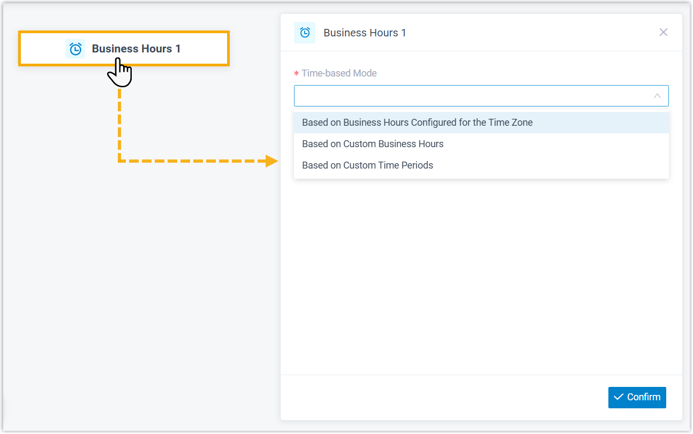
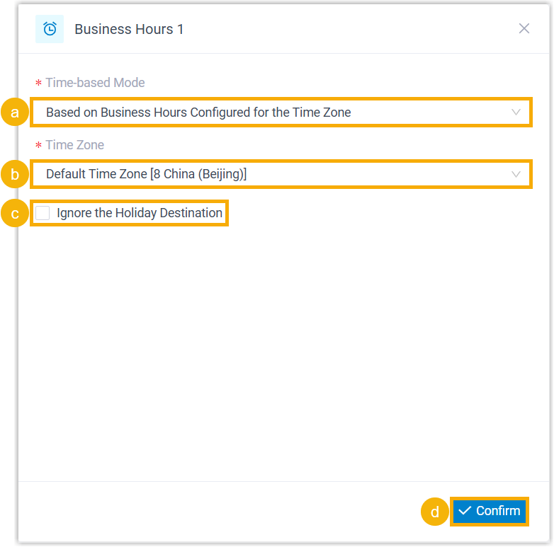
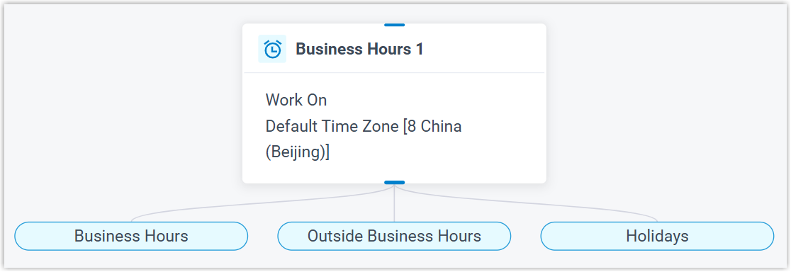
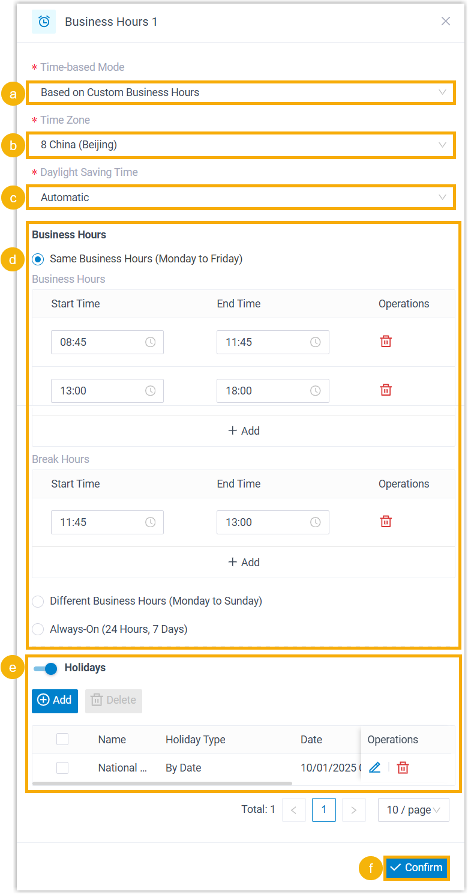
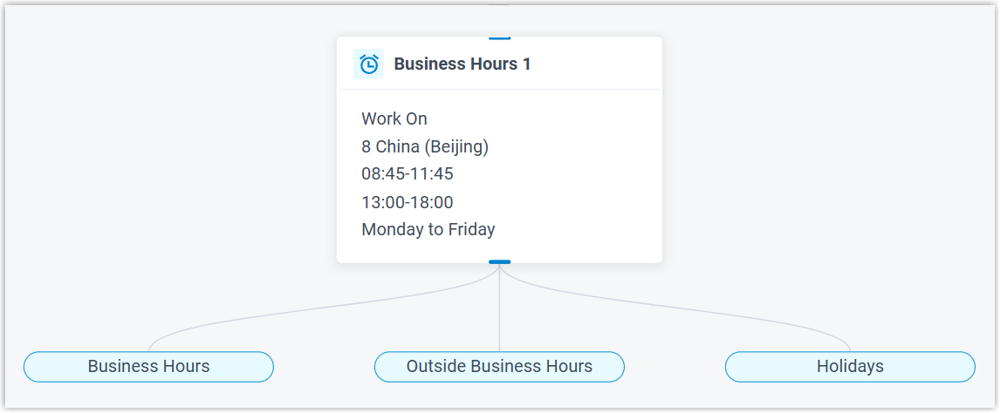
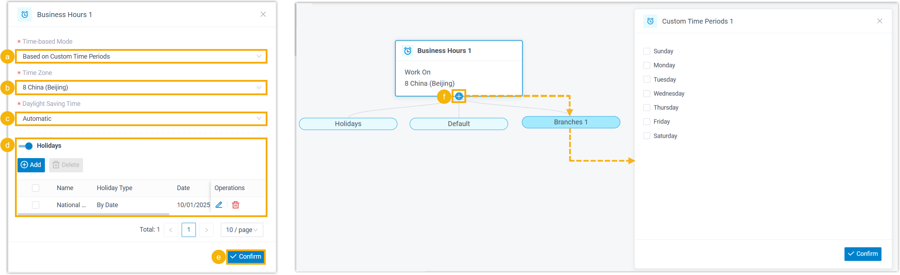
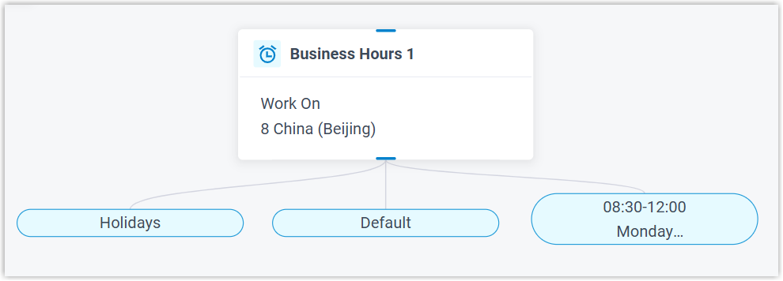
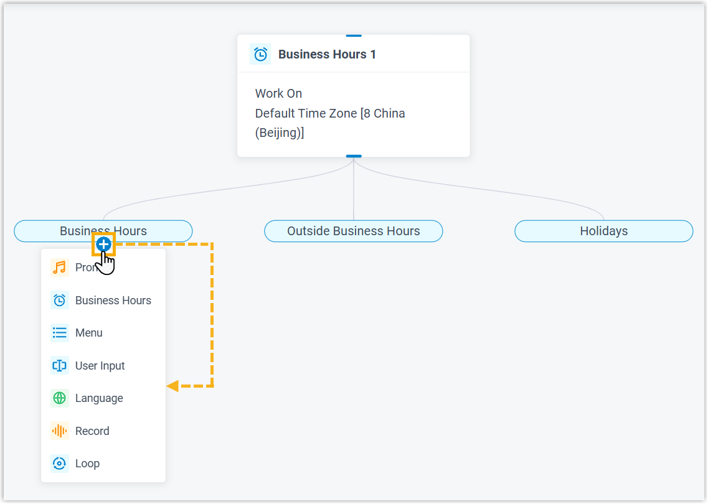

Business Hours
This topic provides an overview of the Business Hours component, and describes its configuration as well as supported component connections.
Component introduction
Business Hours component allows you to route calls to different destinations based on the time of day. A variety of time-based modes are available to flexibly define office hours and implement time-based call routing.
- Supported time-based modes
-
Type Description Business Hours Across Time Zones Use pre-configured business hours for specific time zone.
Note: This requires you to configure business hours in advance. To configure this, go to .Custom Business Hours Create custom business hours with a uniform or varied schedule through the week, or full time (24x7) schedule.
Custom Time Periods Create custom time periods to accommodate granular scheduling needs.
Component configuration
- After adding Business Hours component to a call flow,
click Business Hours component to proceed with the
configuration.

- Select a time-based mode according to your business schedule, then configure its
related settings.
Scenario Instruction Use Business Hours Configured for Time Zone 
- In the Time-based Mode drop-down list, select Based on Business Hours Configured for the Time Zone.
- In the Time Zone drop-down list, select a time zone.
- Optional: To prevent incoming calls from
being distributed to the holiday destination,
select the checkbox of Ignore the
Holiday Destination.Note: If enabled, incoming calls during holidays will be routed to the destination defined for Business Hours or Outside Business Hours.
- Click Confirm.
The selected time zone will appear on the component.

Use Custom Business Hours 
- In the Time-based Mode drop-down list, select Based on Custom Business Hours.
- In the Time Zone drop-down list, select a time zone.
- In the Daylight Saving Time drop-down list, select an option to enable or disable the feature.
- Select a business hour type, then configure its
related settings to customize business hours.Note: Up to 10 time periods are supported for both business hours and break hours respectively.
- Optional: Turn on the switch
of Holidays, then add holidays.Note: Up to 50 holidays are supported.
- Click Confirm.
The custom business hours will appear on the component.

Use Custom Time Periods 
- In the Time-based Mode drop-down list, select Based on Custom Time Periods.
- In the Time Zone drop-down list, select a time zone.
- In the Daylight Saving Time drop-down list, select an option to enable or disable the feature.
- Optional: Turn on the switch
of Holidays, then add holidays.Note: Up to 50 holidays are supported.
- Click Confirm.
- Click
 on the
component to add and configure custom time periods.Note: Up to 50 custom time periods are supported.
on the
component to add and configure custom time periods.Note: Up to 50 custom time periods are supported.The custom time periods will appear on the component.

Note: Default branch indicates the failover destination for incoming calls that don't match any configured time conditions.
-
Click
on the branches to add the desired component as its destination.
Component connections
Business Hours component comes with built-in branches - such as Business Hours, Outside Business Hours, and Holidays - that defines the time condition. Each branch can be connected to one component to specify the corresponding call destination, which can be any of the supported components.